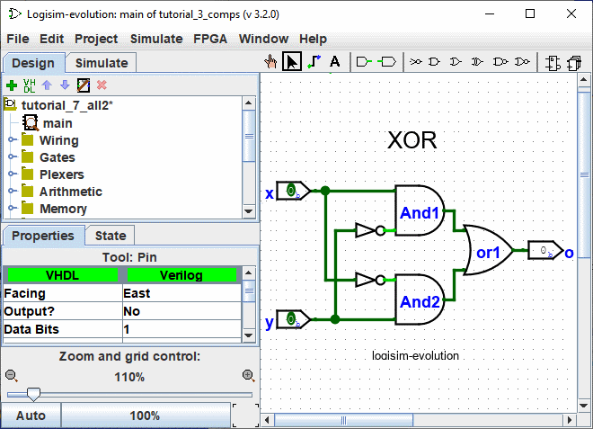
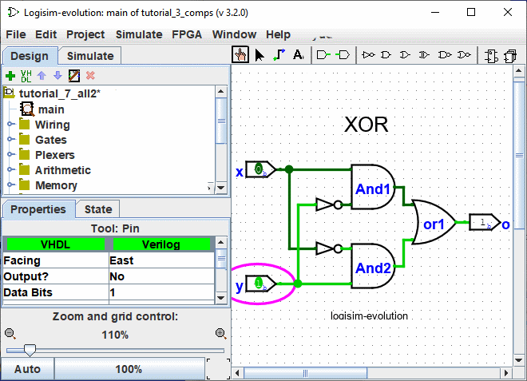

Previous:Step 3: Adding text
Step 4: Testing your circuit
Our final step is to test our circuit to ensure that it really does what we intended. Logisim is already simulating the circuit. Let's look again at where we were.

Note that the input pins both contain 0s; and so does the output pin. This already tells us that the circuit already computes a 0 when both inputs are 0.
Now to try another combination of inputs. Select the "Poke" tool () and start poking the inputs by clicking on them. Each time you poke an input, its value will toggle. For example, we might first poke the bottom input (y).

When you change the input value, Logisim will show you what values travel down the wires by drawing them light green to indicate a 1 value or dark green (almost black) to indicate a 0 value. You can also see that the output value has changed to 1.
So far, we have tested the first two rows of our truth table, and the outputs (0 and 1) match the desired outputs.
| x | y | x XOR y |
|---|---|---|
| 0 | 0 | 0 |
| 1 | 0 | 1 |
| 0 | 1 | 1 |
| 1 | 1 | 0 |
By poking the switches through different combinations, we can verify the other two rows. If they all match, then we're done: The circuit works!
To archive your completed work, you might want to save or print your circuit. The | File | menu allows this, and of course it also allows you to exit Logisim. But why quit now ?